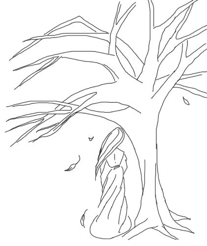
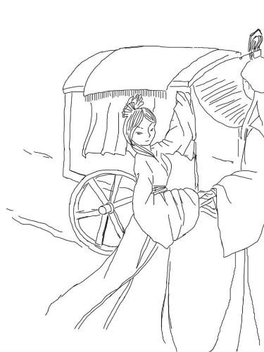

卫风·氓
作者：、 、 、 图：
一
卫国的一个小村庄，有一户养蚕卖丝的人家，家中女儿正是豆蔻年华，上门提亲的媒婆真是快要把门槛都踏平了。那天，一个后生自己抱着匹布，上门来换蚕丝。
年轻的女子已经能帮家里很多事情了，她来到自家店中，准备接过男子手中的布匹。不料那布匹却像生了根一般，怎么也拿不动，女子疑惑地看向那布匹的主人，只见他双眼笑得如夜空中的星星，只是盯着自己看，刹时，女子一张俏脸变得绯红。
他是喜欢我么？女子悄悄问自己的心，心回复自己的，是擂鼓一般的拼命跳动。
她感觉自己的脸烧得更红了，想要逃避，但布的那端却被少年紧紧的抓住，“真是羞死人了！”女孩心想。她又使劲拉了一下布匹，狠狠的瞪了一下少年。少年 感受到女子看想自己的眼光，立马松开了手：“对……对不起啊，我是来换蚕丝的。”他心里现在比丝还乱，手都不知道往哪放了。
她接过布，说要去找应该换给他的丝，就走进里屋去了。她找好了丝，却不拿出去，只偷偷从窗后看他。看着他那手足无措的傻样子，她忍不住偷偷地笑。
一刻钟过去了，他在屋外不安地等待，看着屋内隐隐约约的身影，心里的一个念头却越发坚定起来。
半个时辰过去了，她抱着丝团缓缓走出，他的心跳又莫名地加快了许多，勉强定住了心神，他紧握着自己的双手，轻声道：“如果，我想娶你，你可愿意？”
她感觉自己整个身体都在瞬间燃烧起来了，脑袋里有无数小人跳来跳去，叫嚣着：“答应他！答应他！”她明白他的心意，他已经来过不下六次了，每次他来，自己都会欣喜好多天，而又盼着他下一次的出现。
可是，嫁人是一辈子的事情，他值得相信么？
他耐心地等着，似乎过了很久很久，听到她说：“我愿意，不过，你得答应我三个条件。”
“你且说，只要我有，只要我能，我都会答应你。”他急切而诚恳地说。
“那好，其一，你不能对我撒谎；其二，如果有一天，你没有如今这么喜欢我了，请你告诉我；其三，我要的是明媒正娶。”
男子想了想，点点头：“你放心，此生若负你，我愿受天打五雷轰。”
两人共通心意，霎时间觉得彼此再无缝隙。他言，君当为磐石。她说，妾当作蒲苇。每一对相恋的人都有着这样的渴望，渴望蒲苇韧如丝，渴望磐石无转移。
日渐西斜，少年抱着换来的蚕丝，要离开。
女孩听后，说：“这边的路不好走，你迷路了怎么办？我送你到淇水！”说完脸刷的一下红了。
怎么会迷路呢？这条路少年在心里不知道走了多少遍。
他呐呐的点点头。二人相携出了门。
淇水汤汤。
“到了，你要走了吗？”少年挠了挠头，看着鞋尖问道。
女子不说话，她觉得她的心都要被这水给浸透了。
“今天的水好大……”看女子没有说话，少年鼓起勇气，拉着她说。
“今天水好大，我送你到顿丘吧！”女子慌乱的说道，说完才反应过来自己说了什么，顿时手足无措。
“走吧。”他急切地说，仿佛怕她反悔。心里却是欢喜的不得了。
不管再怎么慢，也还是走到了顿丘，天色也已变暗，她知道不能再送下去了，他也知道。
再怎么依依惜别，现在还是要各自回家。
她看看四周，眼神游移，不敢看他，却又鼓足了勇气说：“快点请媒人来正式提亲吧，秋天……秋天有个好日子，可以……成亲。”说完，脸红的要滴出血，心却快乐的像是要飞起来。
他的双颊也是一红，他懂她的意思，每天都有人以各种借口去她家里串门...若是迟了，怕会永远错过。
这种感觉真好，他们都默默地想。“不过，以后一定会更好的。”两人心中所想，竟异口同声地说了出来，末了，均是一愣，而后付之一笑。
三天后，少年家中长辈来到了女子家中，说要为家中独子提亲。结果也在她的意料之中。
她的父母还是不愿意吧？听说他家中一贫如洗，惟独人品是方圆数里出了名的。所以，她信他说过的话，也愿意为了他恼怒父母兄弟。
“等秋天到来的时候，我就是他的妇人了。”她想。于是微凉的夜里，她常常会在梦中笑醒，即是夏日的暴雨，也吹不散心头那甜蜜的期盼。
二
这个秋日，似乎比往年来得晚了许多。女子算着日子，还有半个多月，心里暗暗嗔怪：自从婚期定了之后，他就没来过自己家中了，不知道被什么事情缠住了。
还有十天的时候，少年托人约她：三日后复关相见，却粗心地没有说明时辰。
相约的那一天来了，前一天夜里，她合衣而睡，听到鸡鸣的第一声，就起身溜出家门，一直走到复关附近，天才微微亮了。她坐在路旁石头上，翘首期盼，盼着能看到 熟悉的、令自己心跳不已的那个身影。时间缓缓流过去，饥饿、疲惫令她感到一阵委屈，凭什么他说什么就是什么，凭什么我要在这里等...
路人望着忧伤委屈的女子，也不知道究竟发生了什么，安慰了两句，纷纷走开。
而直到傍晚时分，才看到他一路小跑过来，她略一迟疑，破涕而笑，赶忙迎了前去。他递过水，满脸的歉意：“对不起，我来晚了，你等了很久了吧。”
她却违心地道：“没有，也是刚到。”
他说：“今日我父母去求了神仙，我们...成亲那天，大吉。”
看着他雀跃难隐的样子，她所有的委屈都抛之天外。最终只说了一句：“真好。”末了又说：“那天，我等你来...”
他说：“好。”
扑细粉，点朱唇、贴簪花、理红妆。母亲将嫁妆一件一件的往箱子里塞，转头一个人默默的流泪——这少年可是女儿的良人？
“娘，你看我穿这嫁衣好看吗？”女子欣喜地提起裙子，在母亲面前转了个圈。两靥是止也止不住的笑意。
“好看。好看……”母亲收拾了一下心情，笑着对女儿说。然后又去收拾嫁妆。
她恨不得把整个家都让女儿带走。
喜鹊叫了三声后，少年驾着马车从村口驶来。
平日里总是粗布衣裳他今天也着了见锦服，胸前带了多大红花，显得精神多了。
下马后，少年快步走到女子的闺房前。轻轻的敲门。
“我来了……”他小心翼翼的压低了声音。
“吱呦……”门开了。门后是面如桃花的新娘。
两双手紧紧的握住，仿佛一生一世。
“桃之夭夭，灼灼其华。之子于归，宜其室家。桃之夭夭，有蕡其实。之子于归，宜其家室……”在村中人们祝贺的歌声中，他牵着她的手走上了马车。
车后面的嫁妆有整整的三筐，羡煞了旁人的眼。
祭拜天地、行合欢礼、入洞房。他的明媒正娶，她的一世倾心。
他们再次许下誓言：
此生不负君之恋
此世不负伊之愿
今日即定三生约
黄泉碧落永相伴
三
清苦而快乐的日子飞逝而过，她一心一意要做个好妻子，在两个人的努力之下，家中光景也一天天好转。
然而，两年多过去了，她却发现，他变了，原来的温柔体贴像是一场梦。他有时接连几天不回家，还常常把乱七八糟的男男女女带回来住，最过分的是，有一天居然打了她。
重重的一巴掌，让她如同掉进了地狱；曾经的家，变得让她忧心、畏惧。
男人都是一样的。她想起了母亲说过的话，可是若要自问：“你后悔么？”她还是毫不犹豫地说：“不后悔。”她爱他啊，像爱自己一样爱他，不，或许比自己还爱。她把自己最单纯最青涩的少女时光都给了他，如今要她收回付出的一切，她做不到。
门前的桑树叶子长了又落，明年还会再长出来的，可是，再长出来的，还是今年的叶子么？
这样的日子又过了三个月，有一天夜里她说：“我想回家一趟。”他沉默不语，心很痛，却装作不耐烦的样子：“回家就回家，跟我说什么？明天就遣你回去，最好永远也不要回来了。”
安静的夜晚，她的抽噎声格外清晰。他心一横，毫不费力地拖起她瘦弱的身体，往门外拉去：“哭什么哭！现在就回去！”
她听到了自己心碎的声音，恍然醒悟。
莫哭，莫哭，不值得。她告诉自己，然后头也不回地离开了那个昔日的家，属于他们两个人的家。
她这次真的走了么？他步履沉重地回到家中，躺了下去，大病一场。
她的美丽、温柔、勤劳、坚强，他何偿不知道，又怎会舍得如此对她，怎会冷眼看她遭受兄弟的嗤笑？可是他不能告诉她真正的原因...
三个月以前，村里有个贵人路过，彼时她正在家门口摘桑叶，粗糙的青布衣裳也无法遮挡她的柔美光华，贵人盯着她看了许久，派身边的剑客来家中说，看上了他的娇娇，要重金买走，问愿不愿意。面对那剑客毫不掩饰的轻蔑神情，以及他随时准备出鞘的长剑，他不敢说不愿意，却也无法说出愿意。嫁给自己，她吃的苦头已经足够多了，眼看着日子一天比一天好起来了，倘若就这样像被当作布匹一样卖掉，从此前途未卜，飘零辗转，自己怎么对得起她，怎么对得起当初的誓言？
剑客一句话也没有多说，转身离去，片刻却又返回，行动间居然带了一丝恭敬：“公子说，许以夫人之位。若是还想考虑，一年之后，公子还路过这里，到时就不是你说了算了。”
他颓然坐倒在地，耳边仍然回响着”夫人之位“四个字，他虽没见过大世面，却也清楚，夫人之位意味着什么。意味着她今生都不必再受如今之苦，意味着她将得到无上的尊贵；况且，今日是这位贵人，明日或许是另外一个贵人，不论是谁，都不是他能得罪得起的，而夫人，却永远不会受到如货物买卖一般的羞辱。
他突然很想追上去说：“我愿意。”然而贵人的车马已经走远了。
如今，她果然有了决绝的心思，那么，离别时，想必也不会太伤心吧，他想，只要她幸福就好，如果上天要惩罚自己，他也是不会埋怨半分的。
【结局一】作者：
贵人来过一年之后，果如那剑客说所，再次登门询问。
此时的他，比起一年之前简直判若两人，衣衫邋遢，面须不洁，浑身散发着一种奇怪的味道。那剑客远远地扔给他一袋钱币，冷着脸问：“人呢？”
他说：“回自己家去了。”
剑客又问：“何地？”
他没有说话，心想，要是我不说，他会不会杀了我。旋即又想，倘若自己死了，说不定她就不能成为夫人了。
这时剑客看他不说话，蓦地拔高了声音：“何地！？”
他叹了一口气，指着她走时的方向：“至顿丘，过淇水西，就到了。”
剑客想了想，大概觉得人生地不熟，要求他带路，否则便刺死他。
于是，他在前面走，剑客用剑抵着他的背，马车在后面跟着，一行人浩浩荡荡往他心底的那个女子家中走去。
他恍然回想起，大约三年前，也是这个时节，他陪她回娘家的情景，那时，云很淡，风很轻，那时，他们眼中只有彼此，心中亦只有彼此。
现在呢？他的心中还是只有她，她会怎么想，估计已经伤心透顶了吧。他自嘲一笑。
整个村子的人都出来了，他们还没看过几个贵人，还是坐着马车带着剑客的贵人，这次，听说贵人是来寻一个娇娇的，只是这个娇娇，三年前已经成了他人妇，莫非贵人不知道？
“诶，那个走在最前面的人是谁？好像是...”人群中一个老妇人指着他自言自语。
“好像什么，那分明就是。听说几个月前娇娇已经回自己家了，可怜的孩子，大半夜涉水回来的。”另一个老妇人说。
“要我说啊，这天下的男子都是喜新厌旧的，那么好的妻子不珍惜，现在后悔了吧，娇娇要是被贵人带走了，那他还有颜面活着吗？”
“对啊对啊...”
他一言不发，默默地接受了周围一切议论声。
她的兄弟把瘦弱的妹妹推出人群，送到贵人的车马前，她与他擦肩而过，陌生得仿佛路人。不，她甚至还对素未谋面的剑客笑了一下。
贵人上下打量着面前的娇娇，给了她父母兄弟一些钱财，他们都明白，这可能是永别了。然而父母兄弟看起来都喜气洋洋的，不约而同地，对那个蓬头垢面的领路人视而不见。
临走，贵人问她：“可还有什么要说的？”
她想了片刻，说：“有一句话要给他说。”她指了指恨不得遁地隐形的他。
贵人笑了笑，一幅了然的样子，说：“好，我等你。”
她缓缓走到他面前，每一步似乎都用尽了全部的力气，离他还有一尺的时候，她轻轻地问了一句：“一年前，你怎么就知道我更愿意跟着贵人？”
说罢，再不看他，转身上了贵人的车。
只留他一世沧桑落寞。
【结局二】作者：
淇水汤汤。坐在船上，她的心情久久难以平静。三年来自己勤勤恳恳，操持家务，侍奉公婆，敬奉兄弟，没有说过不合礼仪的话，没有做过违背妇德的事。两人之间虽不如结婚初时的甜如蜜，也是相敬如宾，举案齐眉。她相信，他们彼此还是相爱的。可是就是最近几个月，男人突然变得脾气乖张，为所欲为，朝秦暮楚，三心二意……
往日的誓言一遍又一遍在她的耳边响起，她的心也一遍一遍的被割裂着。
这究竟是为了什么？
以下堂妻的身份，女她回到村中。
村里人的指指点点，父母的唉声叹气。她觉得自己就要窒息了。
最让她痛苦的还不是这个。
她听说，男人终日酗酒赌博，在街市上打架斗殴，被关进了牢房。
她听说，男人从牢房里出来了，他又娶妻了，是一个卖肉的寡妇。
她听说，寡妇很凶悍，男人也不遑多让，两个人经常在乡亲邻居面前打得不可开交。
……
这真的是她认识的男人吗？那个木讷的，不善言辞的少年去哪了？
父母开始忙着为她张罗新的婚事。这一次，不再是媒婆踏破了门槛，而是父母舔着老脸去找人家。
她都感到羞愧。
有时她好恨，她恨男人，自己的悲剧是男人一手导演的。
半年后，她将嫁给一个砍柴的农夫。就这样嫁了吧，她想。可是男人却偏偏出现在她的婚礼上，他盯着她，双眼感觉都要滴血了。
男人还喜欢她吧！她心中有点小小的欣喜。
带我走吧……带我走吧……
男人并没有带她走，带走的是本应属于她的婚礼。
过了两个月后，她又要嫁人了。这次，是一个鳏夫。
这次即使男人来闹，她也不想理睬了。
男人来了，他背着一把斧头，指着可怜的鳏夫吼道：”你想娶她吗？那你先杀了我。”
她的心好冷。
“你到底要干什么？是你休了我，现在又不依不饶的做什么！”她非常生气，也非常伤心。
“我……我……不管怎么样，你再等等，再等四个月好吗？”男人用祈求的神色看着他。
她的婚礼还是没办成。
没有人愿意再娶她了，村里村外的人都说她有一个凶悍的前夫，注定要折腾她一辈子。
漫长的四个月终于在闲言碎语中度过了。
这天，剑客依约而来，只是身着缟素。
“公子前段时间意外去世了，这是给你的赔礼金……”剑客说罢，掷出一百金，转身离开。
“哈哈……哈哈……报应阿……这才是报应不爽阿”他对着天大喊起来，继而伏在地上，嚎啕大哭。
倾刻，他恍若惊醒般爬起来，向女子家奔去。
等我，一定要等我，我们从头开始。
他如四年前一样敲开女子的家门，可是迎接他的却不是她，而是她年过半百的父母。
“她在哪？我要见她。”他立马跪在了二老的面前，紧紧地抓住他们的衣服。
两位老人嫌恶的看着他。“你还没折磨够她吗？”
“不，不，我是来迎娶她的，你们不知道…………”他一五一十地对老人说了所有的事情。
老人深深地看了他几眼，转身拿出一一卷竹简。
“你自己看吧。”她的父母说，“昨天来了个侍卫，已经把所有的事情都说了。她已经知道了。”
他疑惑的接过竹简，忐忑不安的慢慢展开。
竹简上写着一句话：You give is not what I want。
原来她知道一切后，心中涌起一阵悲凉，对于男人，她已经无爱也无恨。
她出家了，青灯黄卷，了此残生。